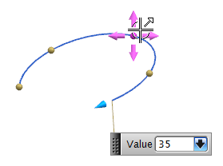

The General Conic command has been upgraded with a modern NX dialog box and a number of functional enhancements.
You can:
Create conics as features, so they are associative to their parent geometry.
Edit the defining points of conics and see the preview update on the screen as you drag the handles.
Edit the conic type.
Set the curve length using handles when you create or edit a conic.
Specify the drawing plane on which to create a conic.

General Conic now supports feature based modeling in an easy to use updated user interface.
|
Application |
Modeling |
|
Menu |
Insert→Curve→General Conic |